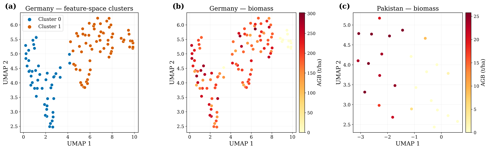

Biomass Calculation & Carbon Stock Estimation Using Satellite Imagery
A Five-Stage RGB-Only Pipeline
- 1 · Patch extraction. Crop a plot-centred RGB patch, resize to 224×224, and normalise with ImageNet statistics.
- 2 · Descriptor extraction. Pass the patch through a frozen DINO ViT-Small to obtain a 384-D CLS-token descriptor. No fine-tuning, at either site.
- 3 · Descriptor selection. Rank dimensions by |Pearson r| with AGB on the training set only, then keep the top K.
- 4 · Unsupervised grouping. Embed with UMAP and cluster with K-means, fitting cluster-specific models where the data support it.
- 5 · Regression. Apply NNLS, ridge, or XGBoost to predict plot-level AGB and wall-to-wall maps.
Key Principle
The encoder is never trained, so the same backbone serves both sites and only the lightweight regressor is fitted per site.

Two Geographically Distinct Sites

| Balakot 🇵🇰 | Karlsruhe 🇩🇪 | |
|---|---|---|
| Forest type | Subtropical / temperate montane | Managed temperate lowland |
| Plots (n) | 25 | 113 |
| Forested / zero | 16 / 9 | 101 / 12 |
| Forested AGB (t ha⁻¹) | 2.05–25.77 | 100.9–302.0 |
| Full AGB range | 0–25.8 | 0–302 |
| GSD (m) | 0.23 | 0.177 |
| Validation | Nested LOO | 85/15 split |
Bimodal Labels, Two Design Choices
Neither site has a single continuous AGB mode: each carries a block of true zero-biomass plots (9 and 12) separated by a wide gap from its forested mode. That bimodality is what motivates zero-biomass anchoring, and, in Karlsruhe's structurally varied stands where feature distance stops tracking biomass difference, per-cluster regressors.
Balakot: DINO + NNLS Leads
| Method | %RMSE | R² |
|---|---|---|
| DINO + NNLS (adaptive K) | 24.71 | 0.922 |
| Random forest* | 31.12 | 0.876 |
| DINO + Ridge (K=160) | 31.73 | 0.871 |
| Gradient boosting* | 31.91 | 0.870 |
| ResNet50 + XGBoost | 41.47 | 0.780 |
| DINO + XGBoost (K=40) | 53.46 | 0.635 |
*Hand-crafted 97-D baselines, same nested LOO protocol (Table 3). Forested plots only (n = 16): %RMSE 16.05, R² 0.817.
Key Result
20.6% lower relative error than the best baseline, at R² = 0.922. Forcing all 384 descriptors, with the estimator held fixed so only selection is ablated, degrades NNLS to %RMSE = 33.56, so selection alone is worth 8.85 pp here.

Karlsruhe: Robust Generalisation
| Method | %RMSE | R² |
|---|---|---|
| DINO + NNLS (per-cluster K) | 17.40 | 0.837 |
| Ridge regression* | 22.79 | 0.721 |
| Random forest* | 23.70 | 0.698 |
| DINO + Ridge | 23.83 | 0.695 |
| ResNet50 + Ridge | 24.13 | 0.687 |
| DINO + XGBoost | 26.27 | 0.629 |
| Stacking ensemble* | 53.14 | −0.517 |
*Literature baselines, 17 held-out samples (Table 8). Forested test plots only (n = 15): %RMSE 16.34, R² 0.427.
Key Result
23.6% lower relative error than the best baseline, at RMSE = 30.89 t ha⁻¹ and R² = 0.837 on the 85/15 split. Over 20 repeated stratified splits: 22.99 ± 3.65, still ahead of the best baseline (24.43 ± 2.46).

Is It the Encoder, or Just Deep Features?
| Regressor | DINO 384-D | ResNet50 2048-D |
|---|---|---|
| Balakot 🇵🇰 (n = 25) | ||
| NNLS | 24.71 | 60.33 |
| Ridge | 31.73 | 59.50 |
| XGBoost | 53.46 | 41.47 |
| Karlsruhe 🇩🇪 (n = 113) | ||
| NNLS | 17.40 | 31.97 |
| Ridge | 23.83 | 24.13 |
| XGBoost | 26.27 | 29.86 |
%RMSE. Identical pipeline throughout; only the frozen encoder changes.

The Ranking Inverts
NNLS is the best regressor on DINO descriptors at both sites and the worst on ResNet50, despite ResNet50 carrying 5× the dimensions. Since NNLS predicts purely from cosine distances between descriptors, the self-supervised encoder must be supplying a meaningful metric, not merely more features. No ResNet50 configuration beats the baseline at either site.
When Does Structure Actually Help?

The Diagnostic Decides Correctly at Both Sites
Karlsruhe has real structure, so it is partitioned: for NNLS specialisation is worth +4.2 pp and outweighs the 1.2 pp lost to smaller training sets. For XGBoost the damage is almost all data loss (4.4 of 5.1 pp): it is data-hungry, not harmed by structure. Balakot is a single cluster, so the pipeline keeps one global model; forcing a split there costs NNLS 24.71→64.62, which is exactly what the silhouette predicts.

From Plots to Wall-to-Wall Maps


One Predictor Per Site, Applied Window by Window
Each scene is tiled into non-overlapping 395 px (Karlsruhe) and 152 px (Balakot) windows, encoded, and passed through that site's own fitted NNLS predictor: Karlsruhe uses its per-cluster CV-selected configuration, Balakot its reconstruction-adaptive one. Because every NNLS prediction is a non-negative mixture of measured plots, convex at Balakot, the maps stay inside the field-data range (0–25.4 and 0–253.8 t ha⁻¹) rather than extrapolating like ridge and XGBoost.
Thank You
Questions & Discussion
Biomass Calculation & Carbon Stock Estimation Using Satellite Imagery · SEECS, NUST
Manuscript co-authored with Kohsar University (field data) and RheinMain University of Applied Sciences.
Backup material follows: A1 hand-crafted features · A2 design rationale · A3 alternatives · A4 descriptor signal · A5 sensitivity & Balakot ablation · A6 references
Why These Design Choices
- Frozen DINO. Self-distillation yields embeddings stable across domains and resolutions, so deploying at a new site needs only a small regressor rather than encoder retraining.
- Correlation filter. Closed-form and interpretable, it adds only K as a hyperparameter, requires no extra model fitting, and nests cleanly inside CV folds.
- NNLS. An instance-based method whose simplex constraint (w ≥ 0, Σw = 1) makes each prediction a convex combination of observed AGB, so predictions never extrapolate beyond the training range.
- UMAP + K-means. A label-free step that separates structurally distinct stands so each regressor specialises, falling back to one model when only a single group is supported.
- Zero-biomass anchors. Pull non-forest areas (roads, fields) toward zero AGB at no extra data cost, suppressing artefacts in wall-to-wall maps.
Operational Logic
Every choice minimises cost and labelled-data demand while staying robust at the sample sizes real inventories in low-resource settings actually reach.

The Descriptors Carry Real Biomass Signal

- Descriptor–AGB correlations span −0.843 to +0.871 (mean r = −0.011, SD = 0.429).
- 171 of 384 dimensions (44.5%) are significant at p < 0.05.
- The top descriptor (feature 14) reaches r = 0.871 (p = 1.51×10⁻⁸), and all top-10 have |r| > 0.814.
- The optimal window K = 90–130 sits well below 384, so low-ranked dimensions add noise on small data.
Why Selection Works
Biomass signal is spread broadly across the descriptor space, but the highest-|r| dimensions concentrate it through a closed-form, interpretable filter.
How K Is Chosen, and What Clustering Costs at n = 25


Two Bounds on the Same Claim
Clustering pays only where genuine structure and enough plots per cluster coexist. Balakot has neither (~12 plots/cluster, silhouette 0.14), Karlsruhe has both, and the silhouette test tells the two cases apart before any model is fitted.
How Biomass Is Distributed, and Why It Matters

- Balakot 🇵🇰. 16 forested plots span 2.05–25.77 t ha⁻¹ (mean about 20.22), and 9 plots recorded zero AGB on naturally bare terrain, giving an overall range of 0–25.77.
- Karlsruhe 🇩🇪. 101 forest plots span 100.9–302.0 t ha⁻¹ (mean about 175) across six species (Scots pine, European beech, sessile and red oak, wild cherry, hornbeam), plus 12 non-forest patches added at 0 t ha⁻¹.
- Landscape heterogeneity. In Germany the descriptor space forms clear clusters with diverse biomass. Feature distance no longer tracks biomass difference, so a single global model struggles.
Design Implication
The contrasting distributions justify two choices: zero-biomass anchors for non-forest, and unsupervised clustering with per-cluster regressors for heterogeneous Germany.